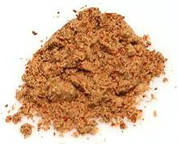

 |
Mitmita Spice MixEthiopia, Eritrea - Mitmita | ||||
| Makes: Effort: Sched: DoAhead: |
1/2cup ** 15 min Yes |
The hot chili spice mix for Ethiopian and Eritrean cuisines, much hotter than Berbere. It doesn't look very red because of the amount of salt. | |||
|
1 2 1/2 1 1-1/2 |
oz t T t T |
Chilis, red (1) Ajwain Seeds (2) Koseret, dried (3) Nigella Seeds Salt |
Make: - (15 min)
|